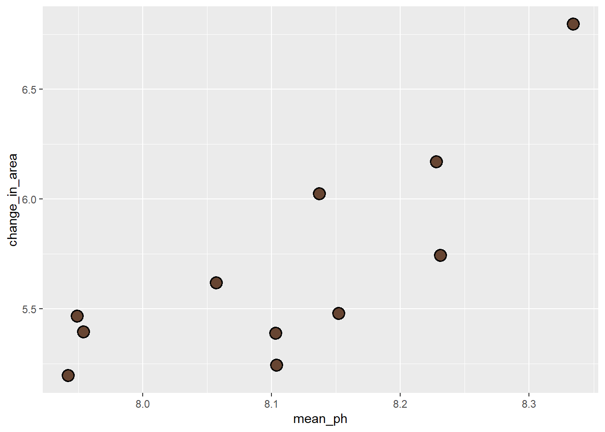
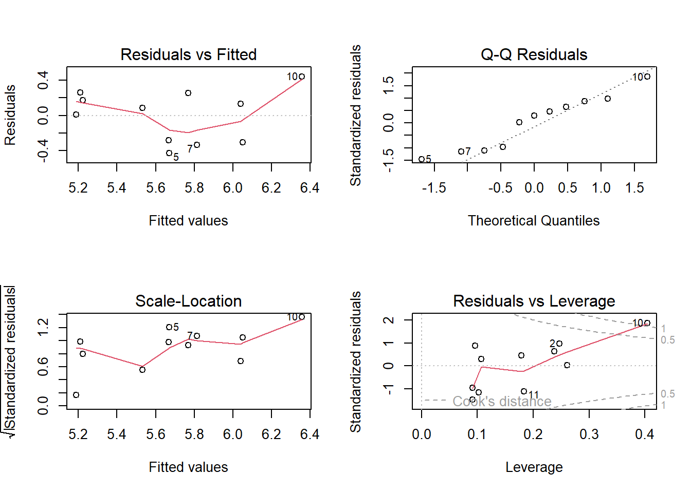
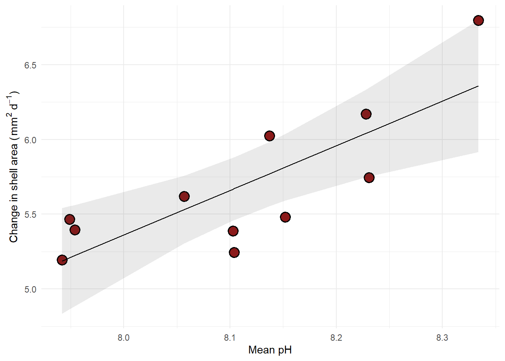
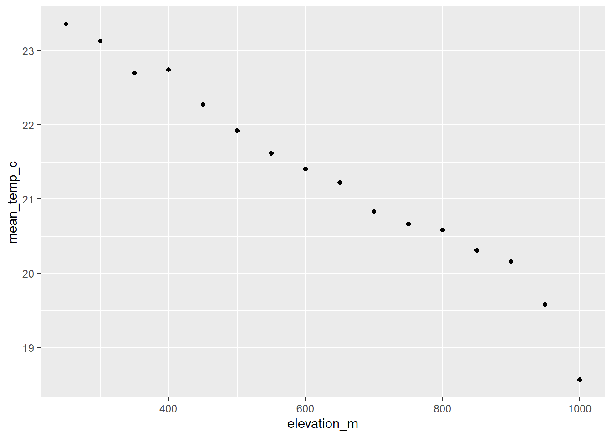
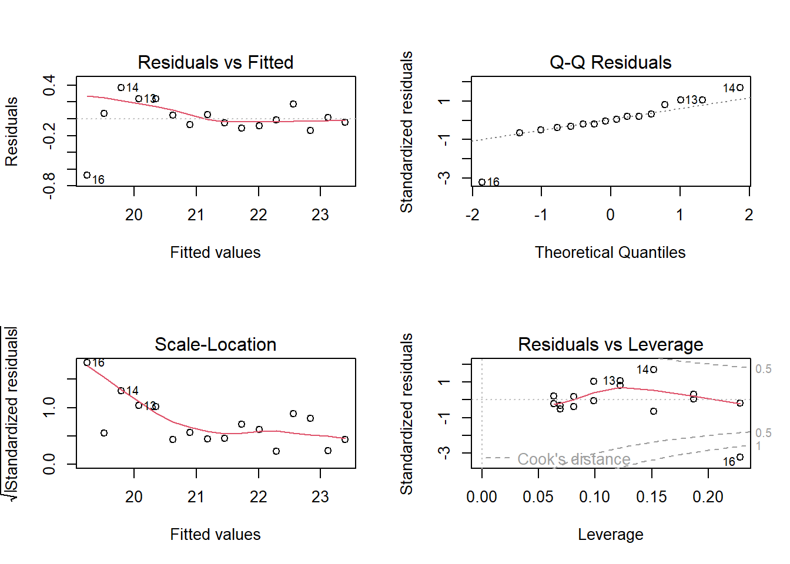
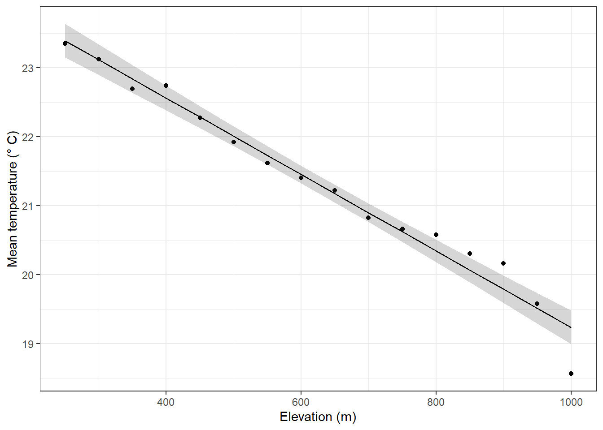

library(tidyverse) # general use
library(janitor) # cleaning data frames
library(here) # file/folder organization
library(readxl) # reading .xlsx files
library(ggeffects) # generating model predictions
library(gtsummary) # generating summary tables for models
# abalone data from Hamilton et al. 2022
abalone <- read_xlsx(here("data", "Abalone IMTA_growth and pH.xlsx"))
# Sonadora temperature data from Alonzo, A. 2024
sonadora <- read_csv(here("data", "Temp_SonadoraGradient_Daily.csv"))Linear regression
1. Set up
2. Abalone example
Data from Hamilton et al. 2022. “Integrated multi-trophic aquaculture mitigates the effects of ocean acidification: Seaweeds raise system pH and improve growth of juvenile abalone.” https://doi.org/10.1016/j.aquaculture.2022.738571
a. Questions and hypotheses
Question: How does pH predict abalone growth (measured in change in shell surface area per day, mm-2 d-1)?
H0: pH does not predict abalone growth (change in shell surface area per day, mm-2 d-1).
HA: pH predicts abalone growth (change in shell surface area per day, mm-2 d-1).
b. Cleaning
# creating clean data frame
abalone_clean <- abalone |> # start with abalone object
# clean column names
clean_names() |>
# select columns of interest
select(mean_p_h, change_in_area_mm2_d_1_25) |>
# rename columns
rename(mean_ph = mean_p_h,
change_in_area = change_in_area_mm2_d_1_25) Don’t forget to look at your data! Use View(abalone_clean) in the Console.
c. Exploratory data visualization
# base layer: ggplot
ggplot(data = abalone_clean,
aes(x = mean_ph,
y = change_in_area)) +
# first layer: points representing abalones
geom_point(size = 4,
stroke = 1,
fill = "#674532",
shape = 21)
theme_minimal() +
labs(x = "pH",
y = "Change in shell surface area")List of 138
$ line :List of 6
..$ colour : chr "black"
..$ linewidth : num 0.5
..$ linetype : num 1
..$ lineend : chr "butt"
..$ arrow : logi FALSE
..$ inherit.blank: logi TRUE
..- attr(*, "class")= chr [1:2] "element_line" "element"
$ rect :List of 5
..$ fill : chr "white"
..$ colour : chr "black"
..$ linewidth : num 0.5
..$ linetype : num 1
..$ inherit.blank: logi TRUE
..- attr(*, "class")= chr [1:2] "element_rect" "element"
$ text :List of 11
..$ family : chr ""
..$ face : chr "plain"
..$ colour : chr "black"
..$ size : num 11
..$ hjust : num 0.5
..$ vjust : num 0.5
..$ angle : num 0
..$ lineheight : num 0.9
..$ margin : 'margin' num [1:4] 0points 0points 0points 0points
.. ..- attr(*, "unit")= int 8
..$ debug : logi FALSE
..$ inherit.blank: logi TRUE
..- attr(*, "class")= chr [1:2] "element_text" "element"
$ title : NULL
$ aspect.ratio : NULL
$ axis.title : NULL
$ axis.title.x :List of 11
..$ family : NULL
..$ face : NULL
..$ colour : NULL
..$ size : NULL
..$ hjust : NULL
..$ vjust : num 1
..$ angle : NULL
..$ lineheight : NULL
..$ margin : 'margin' num [1:4] 2.75points 0points 0points 0points
.. ..- attr(*, "unit")= int 8
..$ debug : NULL
..$ inherit.blank: logi TRUE
..- attr(*, "class")= chr [1:2] "element_text" "element"
$ axis.title.x.top :List of 11
..$ family : NULL
..$ face : NULL
..$ colour : NULL
..$ size : NULL
..$ hjust : NULL
..$ vjust : num 0
..$ angle : NULL
..$ lineheight : NULL
..$ margin : 'margin' num [1:4] 0points 0points 2.75points 0points
.. ..- attr(*, "unit")= int 8
..$ debug : NULL
..$ inherit.blank: logi TRUE
..- attr(*, "class")= chr [1:2] "element_text" "element"
$ axis.title.x.bottom : NULL
$ axis.title.y :List of 11
..$ family : NULL
..$ face : NULL
..$ colour : NULL
..$ size : NULL
..$ hjust : NULL
..$ vjust : num 1
..$ angle : num 90
..$ lineheight : NULL
..$ margin : 'margin' num [1:4] 0points 2.75points 0points 0points
.. ..- attr(*, "unit")= int 8
..$ debug : NULL
..$ inherit.blank: logi TRUE
..- attr(*, "class")= chr [1:2] "element_text" "element"
$ axis.title.y.left : NULL
$ axis.title.y.right :List of 11
..$ family : NULL
..$ face : NULL
..$ colour : NULL
..$ size : NULL
..$ hjust : NULL
..$ vjust : num 1
..$ angle : num -90
..$ lineheight : NULL
..$ margin : 'margin' num [1:4] 0points 0points 0points 2.75points
.. ..- attr(*, "unit")= int 8
..$ debug : NULL
..$ inherit.blank: logi TRUE
..- attr(*, "class")= chr [1:2] "element_text" "element"
$ axis.text :List of 11
..$ family : NULL
..$ face : NULL
..$ colour : chr "grey30"
..$ size : 'rel' num 0.8
..$ hjust : NULL
..$ vjust : NULL
..$ angle : NULL
..$ lineheight : NULL
..$ margin : NULL
..$ debug : NULL
..$ inherit.blank: logi TRUE
..- attr(*, "class")= chr [1:2] "element_text" "element"
$ axis.text.x :List of 11
..$ family : NULL
..$ face : NULL
..$ colour : NULL
..$ size : NULL
..$ hjust : NULL
..$ vjust : num 1
..$ angle : NULL
..$ lineheight : NULL
..$ margin : 'margin' num [1:4] 2.2points 0points 0points 0points
.. ..- attr(*, "unit")= int 8
..$ debug : NULL
..$ inherit.blank: logi TRUE
..- attr(*, "class")= chr [1:2] "element_text" "element"
$ axis.text.x.top :List of 11
..$ family : NULL
..$ face : NULL
..$ colour : NULL
..$ size : NULL
..$ hjust : NULL
..$ vjust : num 0
..$ angle : NULL
..$ lineheight : NULL
..$ margin : 'margin' num [1:4] 0points 0points 2.2points 0points
.. ..- attr(*, "unit")= int 8
..$ debug : NULL
..$ inherit.blank: logi TRUE
..- attr(*, "class")= chr [1:2] "element_text" "element"
$ axis.text.x.bottom : NULL
$ axis.text.y :List of 11
..$ family : NULL
..$ face : NULL
..$ colour : NULL
..$ size : NULL
..$ hjust : num 1
..$ vjust : NULL
..$ angle : NULL
..$ lineheight : NULL
..$ margin : 'margin' num [1:4] 0points 2.2points 0points 0points
.. ..- attr(*, "unit")= int 8
..$ debug : NULL
..$ inherit.blank: logi TRUE
..- attr(*, "class")= chr [1:2] "element_text" "element"
$ axis.text.y.left : NULL
$ axis.text.y.right :List of 11
..$ family : NULL
..$ face : NULL
..$ colour : NULL
..$ size : NULL
..$ hjust : num 0
..$ vjust : NULL
..$ angle : NULL
..$ lineheight : NULL
..$ margin : 'margin' num [1:4] 0points 0points 0points 2.2points
.. ..- attr(*, "unit")= int 8
..$ debug : NULL
..$ inherit.blank: logi TRUE
..- attr(*, "class")= chr [1:2] "element_text" "element"
$ axis.text.theta : NULL
$ axis.text.r :List of 11
..$ family : NULL
..$ face : NULL
..$ colour : NULL
..$ size : NULL
..$ hjust : num 0.5
..$ vjust : NULL
..$ angle : NULL
..$ lineheight : NULL
..$ margin : 'margin' num [1:4] 0points 2.2points 0points 2.2points
.. ..- attr(*, "unit")= int 8
..$ debug : NULL
..$ inherit.blank: logi TRUE
..- attr(*, "class")= chr [1:2] "element_text" "element"
$ axis.ticks : list()
..- attr(*, "class")= chr [1:2] "element_blank" "element"
$ axis.ticks.x : NULL
$ axis.ticks.x.top : NULL
$ axis.ticks.x.bottom : NULL
$ axis.ticks.y : NULL
$ axis.ticks.y.left : NULL
$ axis.ticks.y.right : NULL
$ axis.ticks.theta : NULL
$ axis.ticks.r : NULL
$ axis.minor.ticks.x.top : NULL
$ axis.minor.ticks.x.bottom : NULL
$ axis.minor.ticks.y.left : NULL
$ axis.minor.ticks.y.right : NULL
$ axis.minor.ticks.theta : NULL
$ axis.minor.ticks.r : NULL
$ axis.ticks.length : 'simpleUnit' num 2.75points
..- attr(*, "unit")= int 8
$ axis.ticks.length.x : NULL
$ axis.ticks.length.x.top : NULL
$ axis.ticks.length.x.bottom : NULL
$ axis.ticks.length.y : NULL
$ axis.ticks.length.y.left : NULL
$ axis.ticks.length.y.right : NULL
$ axis.ticks.length.theta : NULL
$ axis.ticks.length.r : NULL
$ axis.minor.ticks.length : 'rel' num 0.75
$ axis.minor.ticks.length.x : NULL
$ axis.minor.ticks.length.x.top : NULL
$ axis.minor.ticks.length.x.bottom: NULL
$ axis.minor.ticks.length.y : NULL
$ axis.minor.ticks.length.y.left : NULL
$ axis.minor.ticks.length.y.right : NULL
$ axis.minor.ticks.length.theta : NULL
$ axis.minor.ticks.length.r : NULL
$ axis.line : list()
..- attr(*, "class")= chr [1:2] "element_blank" "element"
$ axis.line.x : NULL
$ axis.line.x.top : NULL
$ axis.line.x.bottom : NULL
$ axis.line.y : NULL
$ axis.line.y.left : NULL
$ axis.line.y.right : NULL
$ axis.line.theta : NULL
$ axis.line.r : NULL
$ legend.background : list()
..- attr(*, "class")= chr [1:2] "element_blank" "element"
$ legend.margin : 'margin' num [1:4] 5.5points 5.5points 5.5points 5.5points
..- attr(*, "unit")= int 8
$ legend.spacing : 'simpleUnit' num 11points
..- attr(*, "unit")= int 8
$ legend.spacing.x : NULL
$ legend.spacing.y : NULL
$ legend.key : list()
..- attr(*, "class")= chr [1:2] "element_blank" "element"
$ legend.key.size : 'simpleUnit' num 1.2lines
..- attr(*, "unit")= int 3
$ legend.key.height : NULL
$ legend.key.width : NULL
$ legend.key.spacing : 'simpleUnit' num 5.5points
..- attr(*, "unit")= int 8
$ legend.key.spacing.x : NULL
$ legend.key.spacing.y : NULL
$ legend.frame : NULL
$ legend.ticks : NULL
$ legend.ticks.length : 'rel' num 0.2
$ legend.axis.line : NULL
$ legend.text :List of 11
..$ family : NULL
..$ face : NULL
..$ colour : NULL
..$ size : 'rel' num 0.8
..$ hjust : NULL
..$ vjust : NULL
..$ angle : NULL
..$ lineheight : NULL
..$ margin : NULL
..$ debug : NULL
..$ inherit.blank: logi TRUE
..- attr(*, "class")= chr [1:2] "element_text" "element"
$ legend.text.position : NULL
$ legend.title :List of 11
..$ family : NULL
..$ face : NULL
..$ colour : NULL
..$ size : NULL
..$ hjust : num 0
..$ vjust : NULL
..$ angle : NULL
..$ lineheight : NULL
..$ margin : NULL
..$ debug : NULL
..$ inherit.blank: logi TRUE
..- attr(*, "class")= chr [1:2] "element_text" "element"
$ legend.title.position : NULL
$ legend.position : chr "right"
$ legend.position.inside : NULL
$ legend.direction : NULL
$ legend.byrow : NULL
$ legend.justification : chr "center"
$ legend.justification.top : NULL
$ legend.justification.bottom : NULL
$ legend.justification.left : NULL
$ legend.justification.right : NULL
$ legend.justification.inside : NULL
$ legend.location : NULL
$ legend.box : NULL
$ legend.box.just : NULL
$ legend.box.margin : 'margin' num [1:4] 0cm 0cm 0cm 0cm
..- attr(*, "unit")= int 1
$ legend.box.background : list()
..- attr(*, "class")= chr [1:2] "element_blank" "element"
$ legend.box.spacing : 'simpleUnit' num 11points
..- attr(*, "unit")= int 8
[list output truncated]
- attr(*, "class")= chr [1:2] "theme" "gg"
- attr(*, "complete")= logi TRUE
- attr(*, "validate")= logi TRUEd. Abalone model
Model fitting
abalone_model <- lm(
change_in_area ~ mean_ph, # formula: change in area as a function of pH
data = abalone_clean # data frame: abalone_clean
)Diagnostics
par(mfrow = c(2, 2)) # creating a 2x2 grid
plot(abalone_model) # plot diagnostic plots
Model summary
# more information about the model
summary(abalone_model)
Call:
lm(formula = change_in_area ~ mean_ph, data = abalone_clean)
Residuals:
Min 1Q Median 3Q Max
-0.42714 -0.29282 0.08769 0.21258 0.43965
Coefficients:
Estimate Std. Error t value Pr(>|t|)
(Intercept) -18.5010 6.1601 -3.003 0.01488 *
mean_ph 2.9827 0.7596 3.926 0.00348 **
---
Signif. codes: 0 '***' 0.001 '**' 0.01 '*' 0.05 '.' 0.1 ' ' 1
Residual standard error: 0.3063 on 9 degrees of freedom
(1 observation deleted due to missingness)
Multiple R-squared: 0.6314, Adjusted R-squared: 0.5905
F-statistic: 15.42 on 1 and 9 DF, p-value: 0.003477insert your notes here
Generating predictions
# creating a new object called abalone_preds
abalone_preds <- ggpredict(
abalone_model, # model object
terms = "mean_ph" # predictor (in quotation marks)
)
# display the predictions
abalone_preds# Predicted values of change_in_area
mean_ph | Predicted | 95% CI
--------------------------------
7.94 | 5.19 | 4.83, 5.54
7.95 | 5.21 | 4.86, 5.55
8.06 | 5.53 | 5.30, 5.76
8.10 | 5.67 | 5.46, 5.88
8.10 | 5.67 | 5.46, 5.88
8.14 | 5.77 | 5.55, 5.98
8.15 | 5.81 | 5.59, 6.04
8.33 | 6.36 | 5.92, 6.80# look at the column names (do this in the Console!!!)
# colnames(abalone_preds)
# look at the actual object (do this in the console!!!)
# View(abalone_preds)
# finding the model prediction at a specific value
ggpredict(
abalone_model, # model object
terms = "mean_ph[8]" # predictor (in quotation marks) and predictor value in brackets
)# Predicted values of change_in_area
mean_ph | Predicted | 95% CI
--------------------------------
8 | 5.36 | 5.08, 5.64insert your notes here
Visualizing model predictions and data
# base layer: ggplot
# using clean data frame
ggplot(data = abalone_clean,
aes(x = mean_ph,
y = change_in_area)) +
# first layer: points representing abalones
geom_point(size = 4,
stroke = 1,
fill = "firebrick4",
shape = 21) +
# second layer: ribbon representing confidence interval
# using predictions data frame
geom_ribbon(data = abalone_preds,
aes(x = x,
y = predicted,
ymin = conf.low,
ymax = conf.high),
alpha = 0.1) +
# third layer: line representing model predictions
# using predictions data frame
geom_line(data = abalone_preds,
aes(x = x,
y = predicted)) +
# axis labels
labs(x = "Mean pH",
y = expression("Change in shell area ("*mm^{2}~d^-1*")")) +
# theme
theme_minimal()
Creating a table with model coefficients, 95% confidence intervals, and more
Note: both these functions are from gtsummary.
tbl_regression(abalone_model,
# make sure the y-intercept estimate is shown
intercept = TRUE,
# changing labels in "Characteristic" column
label = list(`(Intercept)` = "Intercept",
mean_ph = "pH")) |>
# changing header text
modify_header(label = "**Variable**",
estimate = "**Estimate**") |>
# turning table into a flextable (makes things easier to render to word or PDF)
as_flex_table()Variable | Estimate | 95% CI | p-value |
|---|---|---|---|
Intercept | -19 | -32, -4.6 | 0.015 |
pH | 3.0 | 1.3, 4.7 | 0.003 |
Abbreviation: CI = Confidence Interval | |||
3. Sonadora temperature example
Data from Ramirez, A. 2024. Sonadora elevational plots: long-term monitoring of air temperature ver 877108. Environmental Data Initiative. https://doi.org/10.6073/pasta/6b66eecae3092d8f2340b5132dec38ab (Accessed 2025-05-14).
a. Questions and hypotheses
Question: Does elevation (in meters) predict temperature (in °C)?
H0: Elevation (m) does not predict temperature (°C).
HA: Elevation (m) predicts temperature (°C).
b. Cleaning and summarizing
# creating new clean data frame
sonadora_clean <- sonadora |>
# clean column names
clean_names() |>
# make the data frame longer
pivot_longer(cols = plot_250:plot_1000,
names_to = "plot_name",
values_to = "temp_c") |>
# separate plot name from elevation
separate_wider_delim(cols = plot_name,
delim = "_",
names = c("plot", "elevation_m"),
cols_remove = FALSE) |>
# remove plot column
select(-plot) |>
# make sure elevation is read as a number
mutate(elevation_m = as.numeric(elevation_m))
# summarizing
sonadora_sum <- sonadora_clean |>
# group by plot and elevation
group_by(plot_name, elevation_m) |>
# calculate mean temperature at each elevation
summarize(mean_temp_c = mean(temp_c, na.rm = TRUE)) |>
# undo the group_by function
ungroup() |>
# arrange in order of elevation
arrange(elevation_m)c. Exploratory data visualization
# base layer: ggplot
ggplot(data = sonadora_sum,
aes(x = elevation_m,
y = mean_temp_c)) +
# first layer: points representing temperature at each elevation
geom_point()
d. Temperature model
# model
temperature_model <- lm(
mean_temp_c ~ elevation_m, # formula: response ~ predictor
data = sonadora_sum # data frame
)Diagnostics
# diagnostics
par(mfrow = c(2, 2))
plot(temperature_model)
Model summary
summary(temperature_model)
Call:
lm(formula = mean_temp_c ~ elevation_m, data = sonadora_sum)
Residuals:
Min 1Q Median 3Q Max
-0.67288 -0.07577 0.00022 0.09393 0.37042
Coefficients:
Estimate Std. Error t value Pr(>|t|)
(Intercept) 24.7807991 0.1719438 144.12 < 2e-16 ***
elevation_m -0.0055446 0.0002581 -21.48 4.08e-12 ***
---
Signif. codes: 0 '***' 0.001 '**' 0.01 '*' 0.05 '.' 0.1 ' ' 1
Residual standard error: 0.238 on 14 degrees of freedom
Multiple R-squared: 0.9706, Adjusted R-squared: 0.9684
F-statistic: 461.4 on 1 and 14 DF, p-value: 4.075e-12insert your notes here
Generating predictions
# model predictions
temperature_preds <- ggpredict(
temperature_model, # model object
terms = "elevation_m" # predictor (in quotation marks)
)
# calculate the temperature prediction at elevation = 900insert your notes here
Visualizing model predictions
# base layer
ggplot(data = sonadora_sum,
aes(x = elevation_m,
y = mean_temp_c)) +
# first layer: temperature at each elevation
geom_point() +
# 95% CI ribbon
# uses model prediction data frame
geom_ribbon(data = temperature_preds,
aes(x = x,
y = predicted,
ymin = conf.low,
ymax = conf.high),
alpha = 0.2) +
# model prediction line
# uses model prediction data frame
geom_line(data = temperature_preds,
aes(x = x,
y = predicted)) +
# axis labels
labs(x = "Elevation (m)",
y = "Mean temperature (\U00B0 C)") +
theme_bw()
Creating a table with model coefficients, 95% confidence intervals, and more
tbl_regression(temperature_model,
# make sure the y-intercept estimate is shown
intercept = TRUE,
# changing labels in "Characteristic" column
label = list(`(Intercept)` = "Intercept",
elevation_m = "Elevation (m)")) |>
# changing header text
modify_header(label = "**Variable**",
estimate = "**Estimate**") |>
# turning table into a flextable (makes things easier to render to word or PDF)
as_flex_table()Variable | Estimate | 95% CI | p-value |
|---|---|---|---|
Intercept | 25 | 24, 25 | <0.001 |
Elevation (m) | -0.01 | -0.01, 0.00 | <0.001 |
Abbreviation: CI = Confidence Interval | |||